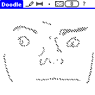

Downloads
Download Doodle
Download Source
Download Docs
Desktop Tools
Doo2pcx Page
Download Doo2pcx
Reference
Release Notes
FAQ
History
Gallery
Fan Mail
Buy It!?
Doodle
A PalmOS paint application designed for freehand drawing with minimal distractions. Among the first handful of paint programs for PalmOS when released as Doodle 0.6 in April, 1997, that original release continues to generate thousands of downloads five and a half years later.
Doodle's fans include calligraphers, typeface designers, cartoonists, biological illustrators, flip book animators, and people who just like to doodle.
Doodle 0.8 fixes all known problems in the original release, works on all PalmOS releases from 1.0 to 5.0, works (in black and white) on color displays (including the Sony Clié), adds new features, and remains nearly perfectly compatible with the original release.
Users upgrading from Doodle 0.6 should check the release notes. Users may read the reference on line, download a copy of the reference for their own machine, or just work out their own compromise with the program itself.
Doodle is free software, licensed under the Gnu GPL which provides ABSOLUTELY NO WARRANTY. The source code for Doodle is yours for uses allowed by the license.